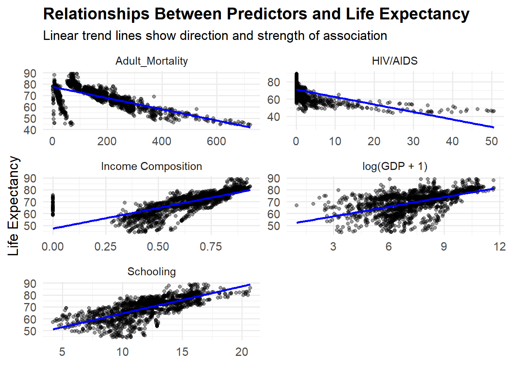

Model
Model Specification
We fit a multiple linear regression model to predict life expectancy based on several key health and socioeconomic indicators.
The model is defined as:
\[ \text{Life Expectancy} = \beta_0 + \beta_1 \cdot \text{Adult Mortality} + \beta_2 \cdot \text{Income Composition of Resources} + \beta_3 \cdot \text{HIV/AIDS} + \beta_4 \cdot \text{Schooling} + \beta_5 \cdot \log(\text{GDP} + 1) + \epsilon \]
Where:
- \(\beta_0\) is the intercept
- \(\epsilon\) is the error term
Data Generating Mechanism (DGM)
The estimated equation from the model is:
\[ \text{Life Expectancy} = 51.20 - 0.02 \cdot \text{Adult Mortality} + 10.80 \cdot \text{Income/Resources} - 0.44 \cdot \text{HIV/AIDS} + 0.99 \cdot \text{Schooling} + 0.48 \cdot \log(\text{GDP} + 1) + \epsilon \]
- Adult Mortality is measured per 1,000 people.
- Income Composition of Resources is on a 0–1 scale.
- HIV/AIDS prevalence is a percentage.
- Schooling is in years of education.
- GDP is transformed using log(GDP + 1) to reduce skewness.
Model Coefficients
Below are the estimated coefficients of the model, including 95% confidence intervals:
| Term | Estimate | Std. Error | t value | p-value | 95% CI (Lower) | 95% CI (Upper) |
|---|---|---|---|---|---|---|
| Intercept | 51.20 | 0.57 | 89.7 | < 0.001 | 50.00 | 52.30 |
| Adult Mortality | -0.0194 | 0.00097 | -19.9 | < 0.001 | -0.0213 | -0.0175 |
| Income Composition of Resources | 10.80 | 0.85 | 12.7 | < 0.001 | 9.13 | 12.50 |
| HIV/AIDS | -0.444 | 0.0186 | -23.9 | < 0.001 | -0.480 | -0.407 |
| Schooling | 0.986 | 0.0574 | 17.2 | < 0.001 | 0.873 | 1.10 |
| log(GDP + 1) | 0.479 | 0.0681 | 7.03 | < 0.001 | 0.345 | 0.612 |
Interpretation
- Adult Mortality and HIV/AIDS are strongly associated with lower life expectancy.
- Schooling, Income Composition, and GDP are positively associated with higher life expectancy.
- All predictors are statistically significant at p < 0.001.
Predictor Relationships
To better understand how each predictor relates to life expectancy individually, the following faceted scatterplots show the relationships between life expectancy and each variable.
Each panel includes a linear trend line to illustrate the direction and strength of association: